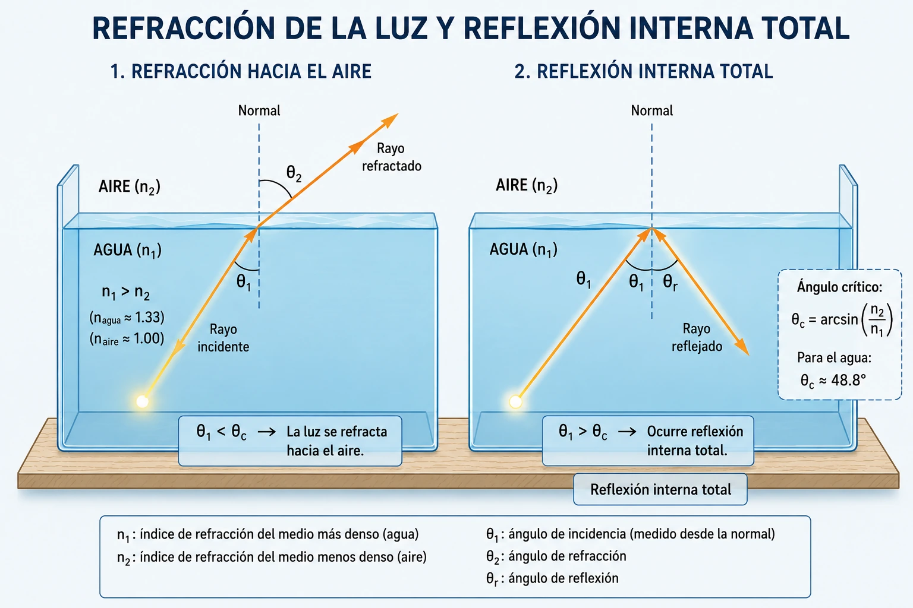
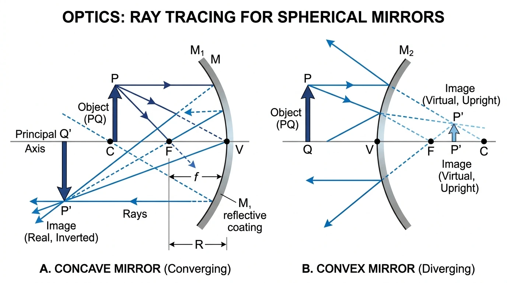
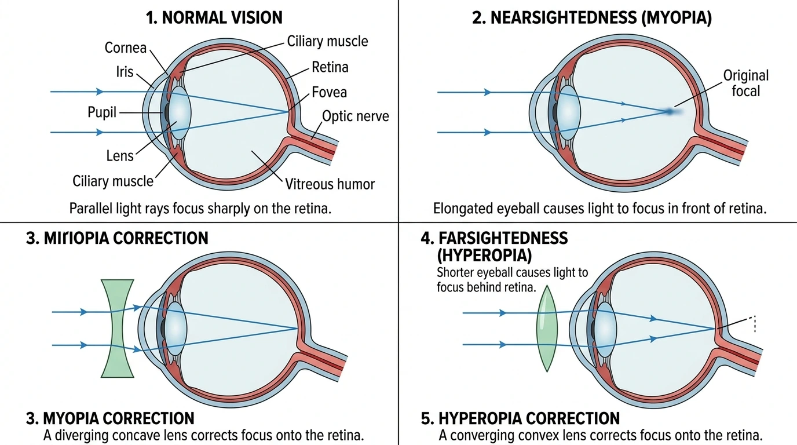

ÓPTICA GEOMÉTRICA: LEYES DE SNELL, ESPEJOS, LENTES Y EL OJO HUMANO
Laboratorio Virtual Interactivo, Modelamiento Físico Cuantitativo y Corrección de Defectos Visuales
TU MISIÓN COMO INVESTIGADOR CIENTÍFICO
Durante este taller actuarás como un investigador de la luz. Experimentarás en tiempo real con rayos luminosos, medios de distinta densidad óptica, espejos planos, espejos esféricos cóncavos y convexos, lentes delgadas y la anatomía óptica del ojo humano. Descubrirás cómo se comporta la luz y aplicarás modelos matemáticos rigurosos para explicar y argumentar los fenómenos observados.
Datos de Identificación del Estudiante
Sección 1 de 8: Inicio y Misión
TEORÍA I
INTRODUCCIÓN A LA ÓPTICA, LA LUZ Y REFLEXIÓN
¿Qué estudia la óptica? Propagación, rayos, haces y espejos planos
GUÍA-TALLER N° 04Reflexión & Espejos Planos
Preguntas Problema para Despertar la Curiosidad Científica
¿Por qué podemos ver los objetos que nos rodean? ¿Cómo viaja la luz a través del espacio? ¿Por qué un lápiz parece quebrarse al sumergirlo en un vaso con agua? ¿Cómo consigue un espejo plano devolver una imagen simétrica? ¿Cómo logran las gafas enfocar el mundo para una persona miope? A lo largo de esta guía responderás científicamente cada una de estas interrogantes.
1. Naturaleza y Propagación de la Luz
La luz es radiación electromagnética visible para el ojo humano (longitudes de onda entre $\approx 380\text{ nm}$ y $750\text{ nm}$). En medios homogéneos e isótropos se propaga en línea recta a una velocidad universal máxima en el vacío de $c \approx 3.00 \times 10^8\text{ m/s}$.
Rayos de Luz: Líneas imaginarias perpendiculares a los frentes de onda que indican la dirección de propagación rectilínea.
Haces de Luz: Conjunto ordenado de rayos luminosos (paralelos, divergentes o convergentes).
Medios Materiales: Transparentes (dejan pasar la luz sin dispersión perceptible), translúcidos (la transmiten pero dispersándola, impidiendo visión nítida) y opacos (absorben o reflejan la luz impidiendo su paso).
2. Ley de la Reflexión
Cuando un rayo incide sobre una superficie reflectante pulida, regresa al medio inicial cumpliendo:
$$\theta_i = \theta_r$$
El ángulo de incidencia es idéntico al ángulo de reflexión
Regla de Oro: El rayo incidente, la recta normal punteada (perpendicular a la superficie en el punto de incidencia) y el rayo reflejado pertenecen siempre al mismo plano geométrico.
3. Espejos Planos y Formación de Imágenes
Un espejo plano es una superficie reflectante perfectamente lisa. Al colocarse un objeto frente a él, los rayos reflejados divergen, pero el ojo humano prolonga sus trayectorias en línea recta hacia atrás del espejo:
$$d_i = -d_o \quad;\quad m = -\frac{d_i}{d_o} = +1$$
Distancia objeto igual a distancia imagen ($m = 1$, mismo tamaño)
Virtual: Se forma por la intersección de las prolongaciones de los rayos reflejados, no por rayos reales convergentes (no puede proyectarse en una pantalla).
Derecha: Conserva la misma orientación vertical que el objeto original.
Simétrica: Se encuentra situada exactamente a la misma distancia detrás del espejo ($|d_i| = d_o$) con inversión lateral (la mano derecha parece la izquierda).
Ampliar
Figura 1: Interfaz óptica de separación aire-agua. Obsérvese el rayo incidente a $50.0^\circ$, la recta normal punteada, el rayo reflejado simétrico a $50.0^\circ$ y el rayo refractado desviado hacia la normal a $35.2^\circ$.
Sección 2 de 8: Luz & Reflexión
TEORÍA II
REFRACCIÓN DE LA LUZ & REFLEXIÓN INTERNA TOTAL
Leyes de Snell-Descartes, índice de refracción, ángulo crítico y fibra óptica
GUÍA-TALLER N° 04Leyes de Snell & RIT
4. Ley de Refracción (Snell-Descartes)
La refracción es el cambio de velocidad y dirección que experimenta una onda luminosa al atravesar oblicuamente la interfaz entre dos medios de distinta densidad óptica:
Comportamiento físico del haz refractado: • Si $n_2 > n_1$ (pasa a medio más refringente): La luz se frena ($v_2 < v_1$) y el rayo se acerca a la recta normal ($\theta_2 < \theta_1$).
• Si $n_2 < n_1$ (pasa a medio menos refringente): La luz se acelera ($v_2 > v_1$) y el rayo se aleja de la recta normal ($\theta_2 > \theta_1$).
Sustancia
Índice ($n$)
Velocidad $v$ ($\times 10^8\text{ m/s}$)
Aire / Vacío
1.000
3.00
Agua pura (20°C)
1.333
2.25
Etanol
1.361
2.20
Vidrio Crown
1.520
1.97
Diamante natural
2.417
1.24
5. Ángulo Crítico y Reflexión Interna Total
Cuando la luz intenta salir de un medio más denso hacia uno menos denso ($n_1 > n_2$), el rayo refractado se aleja progresivamente de la normal hasta que, para un ángulo de incidencia específico llamado ángulo crítico ($\theta_c$), el rayo refractado emerge exactamente a $90^\circ$ rasante a la superficie:
Fenómeno de Reflexión Interna Total (RIT): Si el ángulo de incidencia supera el ángulo crítico ($\theta_1 > \theta_c$), no existe rayo refractado: el $100\%$ de la energía luminosa se refleja íntegramente de vuelta al medio 1. Este principio es el pilar de las telecomunicaciones por fibra óptica y de los prismas de reflexión total.
Ampliar

Figura 2: Condiciones de la RIT: incidencia desde el agua ($n_1 = 1.33$) hacia el aire ($n_2 = 1.00$). Al superar $\theta_c \approx 48.8^\circ$, la luz queda completamente confinada por reflexión interna.
Sección 3 de 8: Refracción & RIT
TEORÍA III
ESPEJOS ESFÉRICOS Y LENTES DELGADAS
Ecuación de Descartes, aumento lateral, rayos principales y aproximación paraxial
GUÍA-TALLER N° 04Óptica de Espejos y Lentes
6. Espejos Esféricos (Cóncavos y Convexos)
Superficies reflectoras con curvatura esférica de radio $R$, donde el foco principal se ubica a $f = R/2$. Con el vértice $V$ en el origen de coordenadas ($x=0$) y el objeto siempre ubicado a la derecha ($d_o > 0$):
Espejo Cóncavo ($f > 0$, Convergente): El centro de curvatura $C$ y el foco $F$ (punto medio entre $C$ y $V$) se encuentran a la derecha del vértice ($x_C > 0, x_F > 0$). Distancia focal positiva ($f > 0$). Forma imágenes reales e invertidas a la derecha ($d_i > 0$) si $d_o > f$, y virtuales derechas detrás ($d_i < 0$) si $d_o < f$.
Espejo Convexo ($f < 0$, Divergente): El centro de curvatura $C$ y el foco $F$ se encuentran a la izquierda del vértice ($x_C < 0, x_F < 0$), con distancia focal negativa ($f < 0$). Los rayos reflejados siempre divergen, produciendo imágenes siempre virtuales, derechas y menores a la izquierda del vértice ($d_i < 0$), ampliando el campo visual panorámico.
Construcción con dos rayos principales: (1) Rayo paralelo al eje que se refleja pasando por el foco; (2) Rayo focal que se refleja paralelo al eje. Su intersección define la punta de la imagen.
7. Lentes Delgadas y Potencia Óptica
Cuerpos transparentes limitados por dos superficies esféricas (o una plana y una esférica):
Lentes Convergentes ($f > 0$): Más gruesas en el centro que en los bordes (biconvexas). Hacen converger los rayos paralelos en un foco real posterior.
Lentes Divergentes ($f < 0$): Más delgadas en el centro que en los bordes (bicóncavas). Hacen divergir los rayos refractados como si emergieran de un foco virtual anterior.
Rayos principales de lentes: (1) Rayo paralelo que refracta pasando por el foco; (2) Rayo que pasa por el centro óptico $O$ sin sufrir ninguna desviación angular.
SIMULADOR INTERACTIVO EN VIVO: ESPEJOS Y LENTES DELGADAS
Arrastra la flecha naranja o usa los controles deslizantes
Distancia Imagen ($d_i$)+60.0 cm
Aumento Lateral ($m$)-2.00x
Radio de Curvatura ($R$)40.0 cm
Naturaleza de la ImagenReal — Invertida (Mayor)
Posición Objeto ($d_o$)30.0 cm
Altura Objeto ($h_o$)10.0 cm
Distancia Focal ($|f|$)20.0 cm
Ampliar

Figura 3: Trazado con dos rayos principales en espejo cóncavo (imagen real, invertida) y espejo convexo (imagen virtual, derecha y reducida).
Sección 4 de 8: Espejos & Lentes
TEORÍA IV
EL OJO HUMANO Y DEFECTOS DE LA VISIÓN
Anatomía óptica interactiva, formación de imagen, miopía, hipermetropía y corrección
GUÍA-TALLER N° 04Óptica de la Visión Humana
8. Explorador Interactivo de la Anatomía Óptica del Ojo
Haz clic o pulsa con tu dedo sobre cada estructura ocular para conocer su ubicación anatómica, naturaleza física y función óptica en la formación de la imagen:
Córnea
Ubicación: Superficie anterior externa del globo ocular. (Tejido transparente y avascular convexo)
Función Óptica: Aporta aproximadamente dos tercios (+43 D) de la potencia refractiva total del ojo; enfoca inicialmente los rayos de luz hacia la pupila.
9. Defectos de Refracción Ocular
En un ojo sano (emétrope), los rayos paralelos de objetos distantes convergen con precisión sobre la retina sin necesidad de acomodación. Cuando existe una discrepancia entre la potencia refractiva y la longitud del globo ocular, se originan las ametropías:
Miopía: El globo ocular es demasiado largo o la córnea/cristalino tienen un exceso de convergencia. Los rayos procedentes de objetos lejanos convergen delante de la retina (visión lejana borrosa).
Hipermetropía: El globo ocular es corto o la potencia de convergencia es insuficiente. La imagen de objetos cercanos intenta enfocarse detrás de la retina (visión cercana borrosa).
Presbicia: Envejecimiento y pérdida de flexibilidad del cristalino que dificulta la acomodación cercana a partir de los 40 años.
Astigmatismo: Curvatura asimétrica no esférica (tórica) de la córnea que genera dos focos distintos.
10. Corrección Óptica con Lentes Oftálmicas
La física resuelve estas anomalías mediante lentes delgadas compensadoras:
• Corrección de Miopía: Se formula una lente divergente (bicóncava) con potencia negativa ($P < 0\text{ D}$). Esta lente hace que los rayos paralelos diverjan ligeramente antes de entrar al ojo, retrasando el punto focal para que coincida exactamente en la retina.
• Corrección de Hipermetropía: Se formula una lente convergente (biconvexa) con potencia positiva ($P > 0\text{ D}$). Aporta la convergencia faltante permitiendo que los rayos cercanos se enfoquen sobre la retina.
Ampliar

Figura 4: Trayectoria de rayos en ojo normal, miopía corregida con lente divergente e hipermetropía corregida con lente convergente.
Sección 5 de 8: Ojo & Visión
LAB
LABORATORIO VIRTUAL Y EXPERIMENTACIÓN VIRTUAL
Simulador multimodal en tiempo real con ciclo de indagación: Predice → Experimenta → Observa
GUÍA-TALLER N° 04Simulador Óptico 4 en 1
¡REFLEXIÓN INTERNA TOTAL!
Ángulo Refracción (θ₂)32.0°
Ángulo Crítico (θc)No existe (n₁ ≤ n₂)
Velocidad v₁300 × 10³ km/s
Velocidad v₂225 × 10³ km/s
Estado y Comportamiento Físico:Existe rayo refractado (Se acerca a la normal, θ₂ < θ₁)
Ángulo de Incidencia (θ₁)45.0°
Fuente Láser Monocromática
Medio 1 (Incidente Superior)
1.000
Medio 2 (Refractado Inferior)1.333
Tipo de Espejo
Distancia Objeto ($d_o$)30.0 cm
Altura Objeto ($h_o$)10.8 cm
Distancia Focal ($|f|$)20.0 cm
Telemetría de la Imagen
Distancia Imagen ($d_i$):+60.0 cm
Aumento ($M$):-2.00x
Radio ($R$):40.0 cm
Naturaleza:Real — Invertida (Mayor)
Tipo de Lente Delgada
Distancia Objeto ($d_o$)30.0 cm
Altura Objeto ($h_o$)10.8 cm
Distancia Focal ($|f|$)20.0 cm
Telemetría de la Lente
Distancia Imagen ($d_i$):+60.0 cm
Aumento ($M$):-2.00x
Potencia Óptica ($P$):+5.00 D
Naturaleza:Real — Invertida (Mayor)
Condición Clínica Visual
Telemetría Optométrica
Agudeza Visual:20/20 (Visión Nítida)
Plano Focal:Exactamente en la Fóvea Retiniana
Lente Aplicada:Sin gafa / lente
Ojo Emétrope: Sistema óptico en equilibrio perfecto.
Reto de Experimentación e Indagación Científica Guiada
1. Predice
¿Qué ocurrirá con el rayo refractado si aumentas el índice $n_2$ manteniendo fijo el ángulo de incidencia?
2. Experimenta
En el simulador, cambia Medio 2 de Agua ($n=1.33$) a Diamante ($n=2.42$) con $\theta_1 = 45^\circ$.
3. Observa
Comprueba cómo el rayo refractado se aproxima bruscamente a la normal punteada vertical.
4. Explica
Aplica la Ley de Snell: al aumentar $n_2$, $\sin(\theta_2)$ debe disminuir para mantener la igualdad.
5. Concluye
Registra en tu cuaderno la tabla de datos y deduce la relación inversa entre rapidez $v$ y desviación.
Sección 6 de 8: Laboratorio Virtual
TALLER
ACTIVIDADES DE CUADERNO Y TALLER EVALUATIVO
Taxonomía de Bloom, desarrollo analítico paso a paso y solución científica
GUÍA-TALLER N° 04Evaluación & Razonamiento
Actividades para Desarrollar en el Cuaderno
Antes de diligenciar las preguntas digitales, debes consignar obligatoriamente en tu cuaderno de apuntes o en hojas de block cuadriculado:
1. Trazado Geométrico de Rayos
Dibuja con regla, transportador y lápices de colores los esquemas de: (a) Reflexión especular ($\theta_i = \theta_r$); (b) Refracción aire-vidrio; (c) Los tres rayos notables en un espejo cóncavo con objeto entre el centro y el foco.
2. Construcción de Tabla Experimental
Genera en el simulador una tabla con 5 ángulos de incidencia ($15^\circ, 30^\circ, 45^\circ, 60^\circ, 75^\circ$) calculando $\sin(\theta_1)$ y $\sin(\theta_2)$ para demostrar experimentalmente la razón constante $n_2/n_1$.
3. Despejes y Procedimientos Numéricos
Transcribe los cálculos completos con: Datos, Fórmula, Sustitución, Cálculo con calculadora en modo DEG y Resultado final con unidades para los ejercicios de Snell, Descartes y Potencia en dioptrías.
4. Argumentación Científica de Fenómenos
Redacta un párrafo argumentativo explicando por qué la luz disminuye su rapidez en medios densos sin cambiar su frecuencia, y cómo una lente divergente resuelve físicamente la miopía.
Modalidad de Taller:
10 Preguntas
Pregunta 1 (Nivel 1 — Recordar y Comprender)Uso Comprensivo del Conocimiento
Manipula en el simulador el láser fijando ángulos $\theta_1$ de $20.0^\circ$, $45.0^\circ$ y $75.0^\circ$. Observa el arco reflejado $\theta_r$ y la normal punteada. ¿Cuál enunciado describe con exactitud física la Ley de la Reflexión?
Solución Científica y Justificación Pedagógica:
Concepto Ley fundamental de reflexión especular geométrica.
Fórmula $\theta_i = \theta_r$ medidos respecto a la normal.
Interpretación La velocidad y longitud de onda en el medio 1 no varían; por tanto, el ángulo de salida es rigurosamente simétrico respecto a la normal.
Pregunta 2 (Nivel 2 — Aplicar y Explicar)Explicación de Fenómenos
Configura Medio 1 = Aire ($n_1 = 1.000$) y Medio 2 = Vidrio Crown ($n_2 = 1.520$) con $\theta_1 = 50.0^\circ$. Al pasar la luz del aire al vidrio: ¿Qué ocurre con la rapidez de la onda luminosa y hacia dónde se desvía el rayo respecto a la normal punteada?
Solución Científica:
Datos $c = 3.00 \times 10^8\text{ m/s}$, $n = 1.520$.
Interpretación Al retardarse en el medio denso, la longitud de onda se acorta y el haz se cierra hacia la normal ($\theta_2 < \theta_1$).
Pregunta 3 (Nivel 2 — Cálculo Cuantitativo)Modelación y Uso Comprensivo
Un haz láser incide desde el aire ($n_1 = 1.000$) sobre agua pura ($n_2 = 1.333$) formando un ángulo $\theta_1 = 45.0^\circ$ con la normal. Aplica la Ley de Snell ($n_1 \sin\theta_1 = n_2 \sin\theta_2$) para hallar el valor teórico de $\theta_2$ y escríbelo aquí:
Procedimiento Estructurado de Solución:
Datos $n_1 = 1.000$, $n_2 = 1.333$, $\theta_1 = 45.0^\circ$.
Pregunta 4 (Nivel 3 — Analizar e Indagar)Indagación Científica
Un científico hace incidir luz desde el aire ($n_1 = 1.000$) sobre un líquido desconocido con $\theta_1 = 60.0^\circ$. En el transportador mide $\theta_2 = 35.0^\circ$. Despeja $n_2$ de la Ley de Snell ($n_2 = \frac{n_1 \sin\theta_1}{\sin\theta_2}$), calcula su valor y deduce qué sustancia es:
Procedimiento Estructurado de Solución:
Datos $n_1 = 1.000$, $\theta_1 = 60.0^\circ$, $\theta_2 = 35.0^\circ$.
Interpretación Corresponde a vidrio crown ($1.52$) o aceite mineral/cedro ($1.515$).
Pregunta 5 (Nivel 3 — Argumentar Fenómeno)Explicación de Fenómenos
Ajusta el láser a $\theta_1 = 0.0^\circ$ (sobre la normal punteada). ¿Qué ocurre con la trayectoria rectilínea del rayo? ¿Existe o no el fenómeno físico de refracción? Justifica teóricamente teniendo en cuenta el cambio de rapidez y longitud de onda:
Interpretación Para $\theta_1 > 41.14^\circ$, ocurre Reflexión Interna Total: ningún rayo pasa al aire.
Pregunta 7 (Nivel 4 — Evaluar y Calcular Espejos)Modelación y Uso Comprensivo
Un objeto se coloca a una distancia $d_o = 30.0\text{ cm}$ de un espejo esférico cóncavo de distancia focal $f = 20.0\text{ cm}$ (radio $R = 40.0\text{ cm}$).
Aplica la ecuación de Descartes ($\frac{1}{f} = \frac{1}{d_o} + \frac{1}{d_i}$) y el aumento ($M = -\frac{d_i}{d_o}$):
Pregunta 8 (Nivel 4 — Evaluar Situación ICFES)Ciencia, Tecnología y Sociedad
Los retrovisores laterales de los vehículos de transporte público en Pereira indican: "Objects in mirror are closer than they appear". Desde la óptica geométrica, ¿por qué los ingenieros eligen espejos convexos en vez de planos?
Fundamentación Física:
Propiedad Los espejos convexos tienen foco virtual ($f < 0$).
Ecuación $d_i = \frac{-|f| \cdot d_o}{d_o + |f|} < 0$ y $0 < M < 1$.
Ventaja Al miniaturizar los objetos ($M < 1$), cabe un ángulo visual mucho mayor en la misma superficie reflectante.
Pregunta 9 (Nivel 5 — Crear y Argumentar Óptica Ocular)Explicación de Fenómenos
En el simulador (Módulo 4: Ojo Humano), activa la Miopía y la Hipermetropía. Selecciona qué tipo de lente corrige cada anomalía visual:
Diagnóstico Físico y Óptico:
Miopía Foco prematuro anterior a la retina. Requiere lente divergente para atrasar el foco.
Hipermetropía Foco posterior a la retina. Requiere lente convergente para adelantar el foco a la fóvea.
Un estudiante con miopía tiene su punto remoto a $50\text{ cm}$ ($0.50\text{ m}$). Para enfocar objetos lejanos, su oftalmólogo le formula una lente divergente con distancia focal $f = -0.50\text{ m}$. Aplica la fórmula $P = \frac{1}{f}$ en metros y calcula la potencia de sus gafas en Dioptrías (D):
Interpretación El signo negativo indica lente bicóncava / divergente correctora de miopía de 2 dioptrías.
¿QUÉ APRENDISTE? — Reflexión Metacognitiva Final
1. ¿Qué fenómeno óptico te resultó más interesante y qué variable tuvo mayor influencia en el rayo?
Consigna tu reflexión crítica en el cuaderno de física.
2. ¿Cuándo es físicamente posible la reflexión interna total y cómo se relaciona con la fibra óptica?
Verifica la condición matemática estricta $n_1 > n_2$.
3. ¿Cómo explicas el funcionamiento de una lente correctora en un ojo con miopía o hipermetropía?
Describe la modificación de la vergencia luminosa.
4. ¿Por qué el modelo de rayos paraxiales es una aproximación y cuáles son sus límites de aplicación?
Recuerda la condición de objetos pequeños y ángulos pequeños.
Sección 7 de 8: Taller & Metacognición
EVAL
SÍNTESIS, RÚBRICA DE EVALUACIÓN Y ENTREGA
Criterios de valoración del aprendizaje y generación de reporte oficial en PDF
GUÍA-TALLER N° 04Cierre de Práctica
Rúbrica Oficial de Desempeño y Criterios de Evaluación (MEN)
Tu calificación definitiva integrará la entrega digital interactiva y la transcripción manual con sustentación rigurosa en tu cuaderno de física:
Criterio
Superior (4.6 - 5.0)
Alto (4.0 - 4.5)
Básico / Bajo (< 4.0)
1. Leyes de Snell y RIT
Aplica la fórmula con despejes algebraicos impecables, unidades y exactitud con el simulador.
Resuelve los ejercicios numéricos con mínimos errores algebraicos.
Presenta dificultades en el despeje de funciones trigonométricas inversas.
2. Espejos y Lentes
Calcula con precisión $d_i$ y aumento $M$, clasificando la imagen y trazando los dos rayos principales.
Aplica la fórmula de Descartes pero titubea al interpretar imágenes virtuales.
Confunde espejos cóncavos con convexos o comete errores de signos.
3. Ojo Humano y Visión
Identifica las causas anatómicas de miopía e hipermetropía, calculando la potencia en dioptrías ($P=1/f$).
Reconoce las lentes correctoras pero requiere apoyo en el cálculo de potencia.
Confunde las lentes convergentes con las divergentes en la corrección visual.
4. Trabajo en Cuaderno
Transcripción manual pulcra, esquemas a color trazados con regla y transportador.
Transcripción manual ordenada con gráficos legibles.
Entrega incompleta, sin esquemas o sin procedimientos paso a paso.
Cargando datos del estudiante...
Finalización y Entrega del Taller
Al pulsar el botón a continuación, podrás generar tu reporte de resultados completo, copiarlo para remitirlo al docente por WhatsApp o Correo Institucional, y descargar el documento oficial en formato PDF en tamaño Carta para tu portafolio académico.
Respuestas guardadas automáticamente en tu navegador